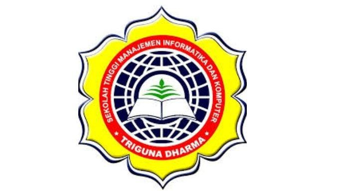
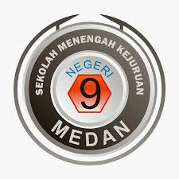
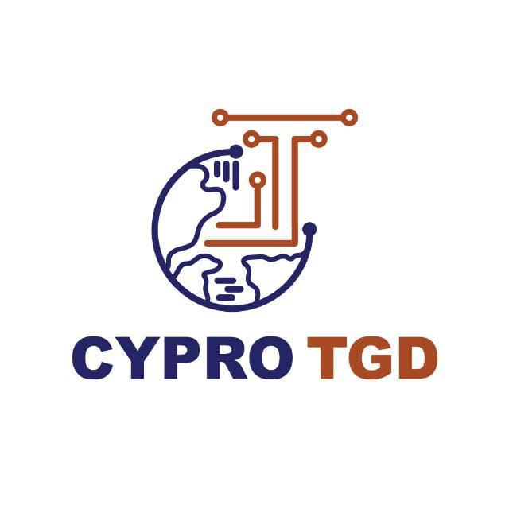
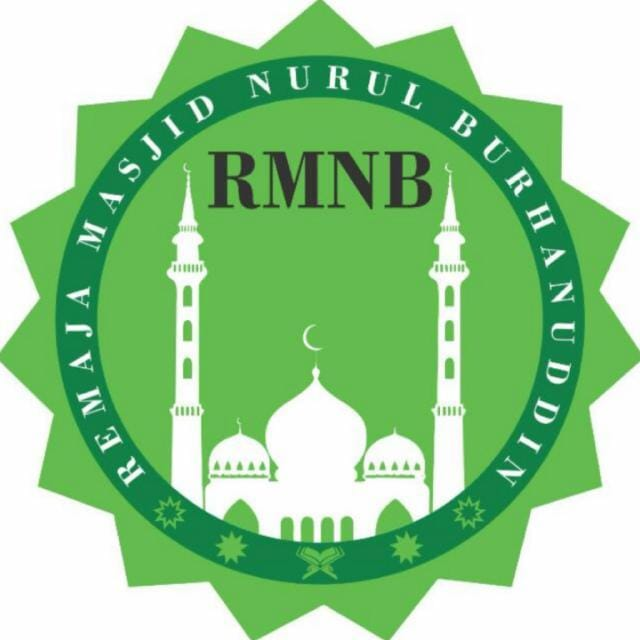

Kelas Pelatihan UI/UX dengan Figma
Merancang dan membawakan kelas pelatihan desain antarmuka untuk pemula, dari dasar Figma, wireframe, hingga prototype interaktif.
FigmaUI/UXMengajar
Halo, saya
Lulusan S1 Sistem Informasi dengan IPK 3,86. Teliti, cepat belajar, dan terbiasa memenuhi target, dari dukungan teknis IT dan administrasi data hingga memimpin organisasi mahasiswa.
Saya lulusan S1 Sistem Informasi STMIK Triguna Dharma dengan latar belakang SMK Rekayasa Perangkat Lunak. Pengalaman saya mencakup dukungan teknis IT, administrasi dan data entry, serta pemasaran digital dan pengelolaan toko online.
Saya memiliki dasar desain UI/UX dan pengembangan web, serta terampil memanfaatkan tools AI untuk riset, penyusunan dokumen, dan peningkatan produktivitas kerja.
Selama kuliah saya memimpin Cyber Programming Club sebagai Ketua Umum, sambil bekerja sebagai kurir. Dari situ saya terbiasa mengatur waktu, bertanggung jawab, dan menyelesaikan pekerjaan sesuai target.




Beberapa project yang pernah saya rancang, pimpin, dan jalankan, dari kelas pelatihan teknologi sampai event kegiatan kemasyarakatan.
Merancang dan membawakan kelas pelatihan desain antarmuka untuk pemula, dari dasar Figma, wireframe, hingga prototype interaktif.
Menyelenggarakan kelas pengembangan web dengan framework Laravel, mulai dari konsep dasar hingga membangun aplikasi sederhana.
Memimpin kepanitiaan peringatan Tahun Baru Islam 1446 H, mulai dari perencanaan, pembagian tugas, hingga hari pelaksanaan.
Menjalankan program kegiatan Ramadhan untuk anak-anak yang mengajak mereka belajar dan beribadah lewat acara yang seru.
Mengadakan rangkaian lomba kemerdekaan yang melibatkan warga, mulai dari penyusunan jadwal hingga pelaksanaan di lapangan.
Menyusun dan melaksanakan pelatihan kepemimpinan dasar untuk membentuk pengurus yang bertanggung jawab dan siap berorganisasi.
Saya terbuka untuk posisi IT Support, Administrasi dan Data Entry, maupun peran lain di bidang teknologi informasi. Hubungi saya kapan saja.